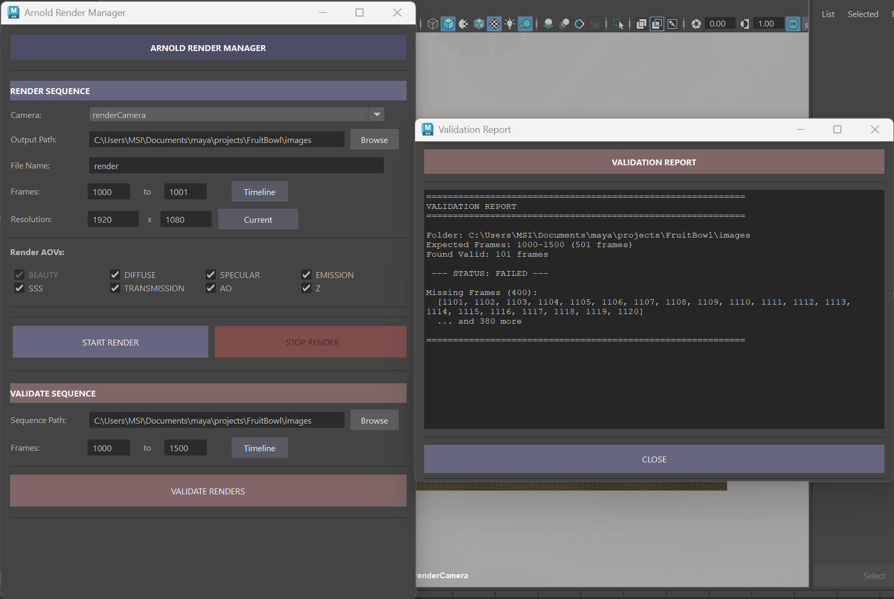

Demo
Goal
An easy-to-use script that streamlines Arnold batch rendering and sequence validation in production pipelines. The tool
addresses common pain points in CG production: manual render setup, time-consuming frame checks, and detecting
corrupted renders before final delivery. The MVP focuses on two core functions: render sequence management and
EXR validation.
Process
- PySide2-based Maya tool with two core functions: Render Sequence and Validate Sequence.
- Render Sequence
1. Custom camera selection, frame range, and resolution controls
2. Multi-AOV setup: Beauty, Diffuse, Specular, SSS, Transmission, AO, Emission, Z
3. Frame-by-frame rendering with real-time progress tracking bar
4. Automatic scene save before rendering starts
5. Auto-sets validation path after render completes
- ValidateSequence
1. Scans output directory against expected frame range
2. Detects missing frames by comparing found files vs expected range
3. Identifies corrupt EXR files by checking magic number (first 4 bytes) and file size thresholds
4. Generates detailed Validation Report window showing pass/fail status, missing frame list, and corrupt file details with byte sizes

Technical Details
- EXR magic number validation: Checks the first 4 bytes of each .exr file against the OpenEXR spec rather than just
checking if the file exists: catches silently corrupted renders that would otherwise pass a simple file-existence check.
- MVP scope discipline: Focused on render management + validation as the two highest-impact pain poin